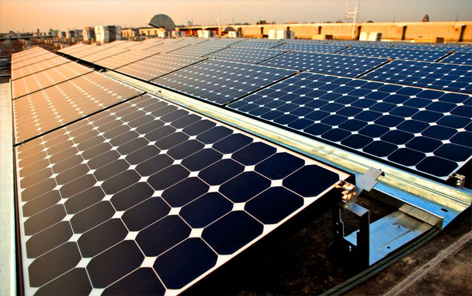

RE100 PPA 중개플랫폼에 구매 585MW 몰렸지만 계약은 아직 0건…중소·중견기업 앞엔 20년 계약·신용도 벽

23일 기준 판매 456MW·구매 585MW 등 1,041MW 등록, 지난달 7일 기준 협상 5건·협약 3건에도 최종 계약 없어…단기 PPA·신용 보강 금융지원·가격정보 공개 요구
기업과 재생에너지 발전사업자를 직접 이어 주는 정부의 'RE100 PPA 중개플랫폼'에 사겠다는 물량이 팔겠다는 물량보다 많이 몰렸지만, 실제 전력구매계약(PPA)으로 이어진 사례는 아직 없다. 플랫폼에는 23일 기준 판매 456MW, 구매 585MW 등 모두 1,041MW가 등록돼 구매 수요가 129MW 더 많다. 한국에너지공단이 박수민 국민의힘 의원실에 낸 자료를 보면 2024년 10월부터 2025년 11월까지 네 차례 열린 고정가격 경쟁입찰 연계형 PPA 중개시장에서는 계약이 한 건도 맺어지지 않았고, 올해 8월 문을 연 상시 플랫폼도 9월 7일 기준 협상 5건·협약 3건이 진행됐을 뿐 최종 계약은 없었다. 걸림돌로는 20년 안팎의 장기계약 부담, 구매기업의 신용도, 가격정보 부족이 꼽힌다. 발전사업자는 사업비를 금융으로 조달하려고 장기계약을 원하고, 금융기관은 전기를 사 갈 기업이 계약을 끝까지 지킬 수 있는지를 따지기 때문에 대기업보다 신용도가 낮은 중소·중견기업이 불리하다는 것이다. 진우삼 한국RE100위원회 위원장은 구매기업 신용을 보강하는 금융지원과 PPA 가격정보 공개, 계약기간 다양화를 함께 추진해야 한다고 제언했으며, 정부는 8월 플랫폼 출범과 함께 중소·중견기업의 망 이용료 지원기간을 3년에서 7년으로 늘리고 계량설비 설치비 지원을 넓혔다.
시민에너지 관점
수출기업 300곳 가운데 99.3%가 고객사로부터 탄소배출 자료를 요구받았거나 받을 예정이라는데, 정작 재생에너지를 살 길은 등록 1,041MW에 계약 0건으로 막혀 있다. 거래 상대를 찾아 주는 것만으로는 부족하고, 20년 계약을 감당할 신용이 없는 기업도 들어올 수 있는 장치가 먼저다. 발전소가 멀리 있는 외지 자본의 것일수록 계약은 금융 논리로만 움직이지만, 같은 지역에서 주민과 기업이 함께 소유한 발전소라면 서로의 사정을 아는 이웃끼리 계약 기간과 위험을 나눌 여지가 커질 수 있다. 정부는 신용 보강과 가격 공개를 서두르고, 지역 안에서 만들고 지역 안에서 사는 재생에너지 거래를 제도 안으로 들여야 한다.
출처: 서울경제TV 2026-10-24 김도하 원문 보기
RE100 PPA仲介プラットフォームに購入585MWが集まるも契約はまだ0件…中小・中堅企業には20年契約・信用度の壁
23日時点で販売456MW・購入585MWなど1,041MWが登録、先月7日時点で交渉5件・協約3件も最終契約なし…短期PPA・信用補完の金融支援・価格情報の公開を求める声
企業と再生可能エネルギー発電事業者を直接結ぶ韓国政府の「RE100 PPA仲介プラットフォーム」に、買いたい量が売りたい量を上回るほど集まったが、実際の電力購入契約（PPA）に結びついた例はまだない。プラットフォームには23日時点で販売456MW、購入585MWの計1,041MWが登録され、購入需要が129MW多い。韓国エネルギー公団がパク・スミン議員（国民の力）の事務所に提出した資料によると、2024年10月から2025年11月まで4回開かれた固定価格競争入札連携型のPPA仲介市場では契約が1件も成立せず、今年8月に始まった常設プラットフォームも9月7日時点で交渉5件・協約3件が進んだだけで最終契約はなかった。障壁として、20年前後の長期契約の負担、購入企業の信用度、価格情報の不足が挙げられる。発電事業者は事業費を金融で調達するため長期契約を望み、金融機関は電気を買う企業が契約を最後まで守れるかを見るため、大企業より信用度の低い中小・中堅企業が不利だという。韓国RE100委員会のチン・ウサム委員長は、購入企業の信用を補う金融支援、PPA価格情報の公開、契約期間の多様化を併せて進めるべきだと提言した。政府は8月のプラットフォーム発足に合わせ、中小・中堅企業の送電網利用料の支援期間を3年から7年に延ばし、計量設備の設置費支援も広げた。
市民エネルギーの視点
輸出企業300社のうち99.3％が取引先から炭素排出データを求められている、または求められる予定だというのに、再エネを買う道は登録1,041MWに対して契約0件で詰まっている。取引相手を探すだけでは足りず、20年契約に耐える信用のない企業でも参加できる仕組みが先だ。発電所が遠く離れた外部資本のものであるほど契約は金融の論理だけで動くが、同じ地域で住民と企業が共に所有する発電所なら、互いの事情を知る隣人同士で契約期間とリスクを分け合う余地が大きくなりうる。政府は信用補完と価格公開を急ぎ、地域でつくり地域で買う再エネ取引を制度の中に取り込むべきだ。
出典: Seoul Economic TV 2026-10-24 Kim Do-ha 原文を読む
RE100 PPA撮合平台吸引585MW购电需求，但签约仍为0件…中小及中坚企业面临20年合同和信用门槛
截至23日登记售电456MW、购电585MW等共1,041MW，截至上月7日虽有5件谈判、3件协议但无最终合同…业界呼吁短期PPA、信用增级金融支持和公开价格信息
韩国政府运营、直接连接企业与可再生能源发电企业的“RE100 PPA撮合平台”上，想买电的量已超过想卖电的量，但至今没有一宗促成实际的购电协议（PPA）。截至23日，平台登记售电456MW、购电585MW，共计1,041MW，购电需求多出129MW。根据韩国能源公团向国民力量议员Park Su-min办公室提交的资料，2024年10月至2025年11月举办四次的固定价格竞标联动型PPA撮合市场未成交一宗合同；今年8月启用的常设平台截至9月7日也只有5件谈判、3件协议在进行，没有最终合同。障碍包括20年左右长期合同的负担、购电企业的信用度以及价格信息不足。发电企业为向金融机构融资而偏好长期合同，金融机构则审查购电企业能否履约到底，因此信用度低于大企业的中小及中坚企业处于不利地位。韩国RE100委员会委员长Jin Woo-sam建议同时推进为购电企业增信的金融支持、公开PPA价格信息和合同期限多样化。政府在8月平台启用时，将中小及中坚企业电网使用费的补贴期限从3年延长至7年，并扩大了计量设备安装费等支持。
市民能源视角
300家出口企业中有99.3%已被或将被客户要求提交碳排放数据，但购买可再生能源的渠道却停在登记1,041MW、签约0件。仅仅帮企业找到交易对象是不够的，首先要有让信用不足以承受20年合同的企业也能进入的机制。发电站越是属于远方的外来资本，合同就越只按金融逻辑运转；如果是同一地区居民与企业共同拥有的发电站，彼此了解情况的邻居之间就可能有更大空间分担合同期限和风险。政府应加快信用增级和价格公开，并把在地生产、在地购买的可再生能源交易纳入制度。
来源: Seoul Economic TV 2026-10-24 Kim Do-ha 查看原文
Korea's RE100 PPA matching platform draws 585 MW of buyer demand but still no signed contracts as 20-year terms and credit ratings block smaller firms
1,041 MW registered as of the 23rd, including 456 MW for sale and 585 MW sought; five negotiations and three agreements as of last month's 7th produced no final deal, prompting calls for short-term PPAs, credit support and price disclosure
Demand to buy power on the Korean government's RE100 PPA matching platform, which links companies directly with renewable energy generators, now exceeds what is on offer, yet not a single listing has turned into an actual power purchase agreement. As of the 23rd, the platform had 1,041 MW registered, 456 MW for sale and 585 MW sought by buyers, leaving demand 129 MW ahead of supply. According to data the Korea Energy Agency submitted to the office of People Power Party lawmaker Park Su-min, four rounds of a PPA matching market linked to fixed-price competitive bidding held between October 2024 and November 2025 produced no contracts, and the standing platform launched this August had five negotiations and three agreements under way as of September 7 but no final contract. The obstacles cited are the burden of contracts lasting around 20 years, buyers' credit ratings and a lack of price information. Generators want long contracts to finance their projects, and lenders check whether the buyer can honour the deal to the end, which puts small and mid-sized firms with weaker credit than large conglomerates at a disadvantage. Jin Woo-sam, chair of the Korea RE100 Committee, urged financial support to strengthen buyers' credit, disclosure of PPA prices and a wider range of contract terms, while the government, on launching the platform in August, extended grid-fee support for small and mid-sized firms from three to seven years and expanded support for metering equipment.
Citizen Energy View
Some 99.3% of 300 exporters say customers already ask, or soon will ask, for their carbon emissions data, yet the route to buying renewable power is stuck at 1,041 MW registered and zero contracts signed. Matching buyers and sellers is not enough; firms without the credit to carry a 20-year contract need a way in first. The more a power plant belongs to distant outside capital, the more its contracts follow financial logic alone, whereas a plant owned jointly by residents and businesses in the same area may leave more room for neighbours who know each other's circumstances to share contract length and risk. The government should move quickly on credit support and price disclosure, and bring renewable trading that is produced and bought within the same community into the system.
Source: Seoul Economic TV 2026-10-24 Kim Do-ha Read the original